The 2025–2026 cycle focused on a new vehicle and payload stack, including fullscale and subscale
rockets, detailed vehicle structures, and a multi-mechanism payload. This page is laid out in rows:
a top-level overview followed by strips for vehicle design, payload design, and manufacturing.
Mechanical DesignSolidWorksCNC & 3D PrintingSystems Integration
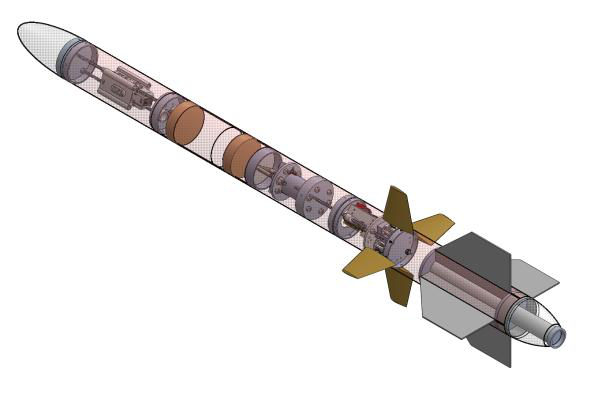
Fullscale and subscale rocket CAD overview for the VADL 25–26 vehicle.
Row 1
Vehicle Design
Bulkplates, recovery bay layout, fincan, boat tail, LDM airframe, and nosecone. This strip shows
representative CAD and drawings for the 25–26 vehicle.
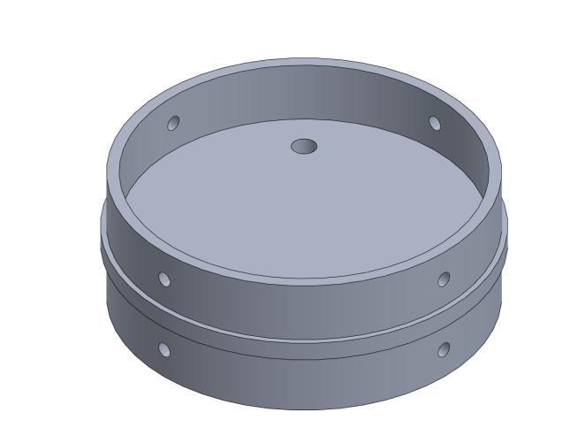
Bulkplate CAD and detailed drawing for the primary vehicle structure.
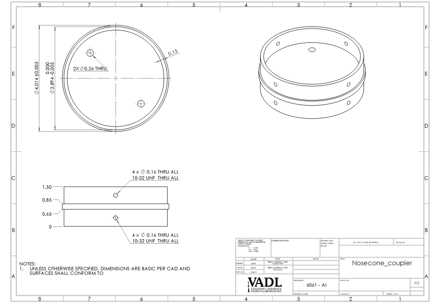
Vehicle structure with bulkplates and internal layout visible.
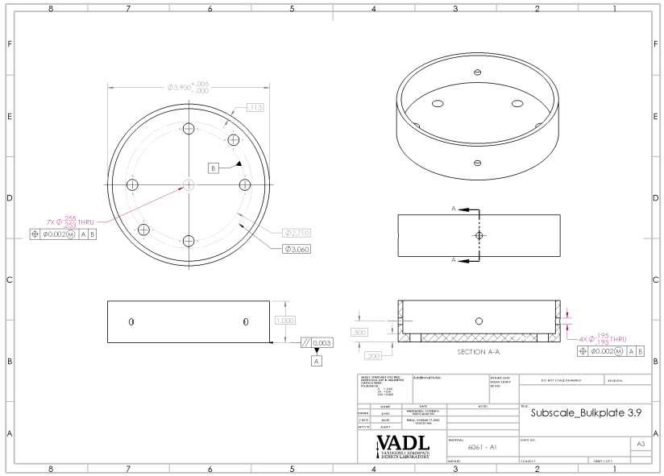
Recovery bay CAD used to design parachute packing and hardware routing.Fincan CAD with fin integration and reinforcement features.
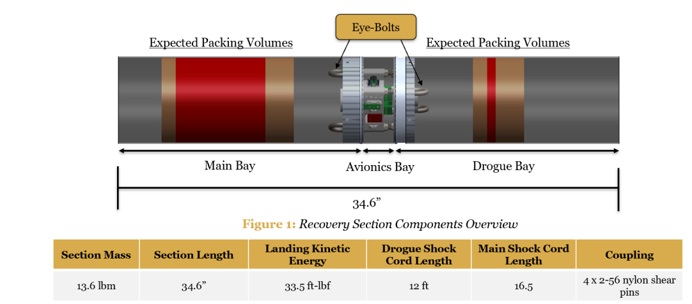
Boat tail geometry balancing structure and aerodynamics.Nosecone CAD with internal mounts for payload/avionics.
Row 2
Payload Design
Rotating bulkplate, shovel extension, leg deployment, parachute detachment, avionics bay, and soil
chamber. This strip shows the core mechanisms and their assemblies.
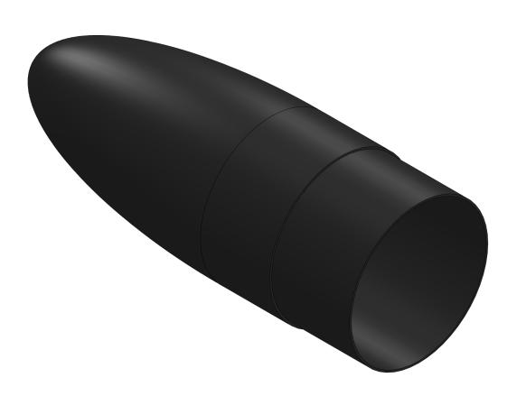
Rotating bulkplate system used to support payload deployment and routing.Assembly view of the rotating bulkplate and support structure.Shovel extension mechanism concept for soil interaction.Detail of shovel extension linkage, mounting, and travel.
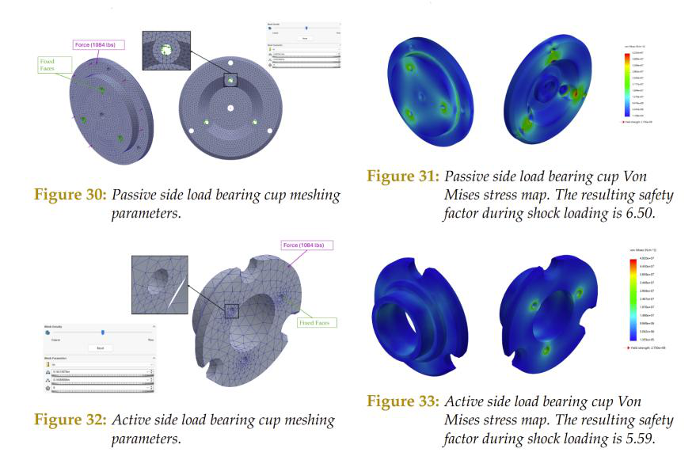
Leg deployment system designed to actuate reliably after landing.Close-up of leg hinges, stops, and hardware.
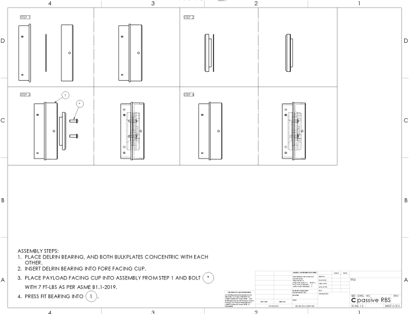
Parachute detachment mechanism integrated into the payload stack.Assembly drawing showing routing and interfaces for detachment hardware.Avionics bay layout with boards, wiring paths, and mounting bosses.Soil chamber geometry designed to capture and retain collected material.
Row 3
Vehicle Manufacturing
Subscale builds used to de-risk the fullscale vehicle, verify fit and integration, and practice
assembly and operations.
Subscale rocket build in the lab to validate the vehicle design.
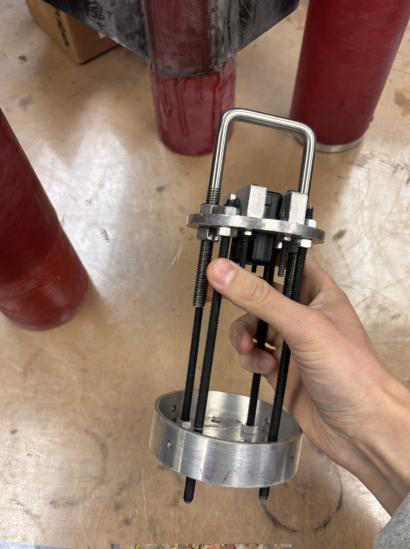
Subscale vehicle on the bench after integration of major components.
Row 4
Payload Manufacturing & Testing
Manufacturing, assembly, and testing of payload hardware, including the drop test rig and deployment
tests.
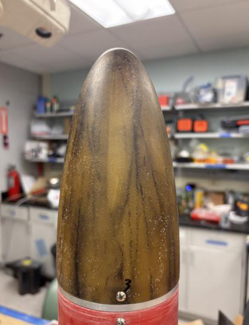
Payload components post-machining/printing, prior to final assembly.Payload assembly on the bench for integration and inspection.
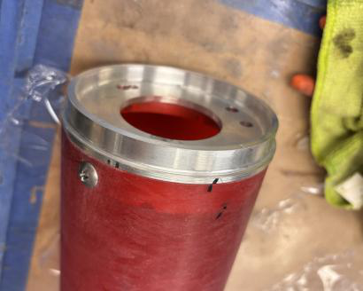
Drop test rig used to validate deployment and impact behavior.
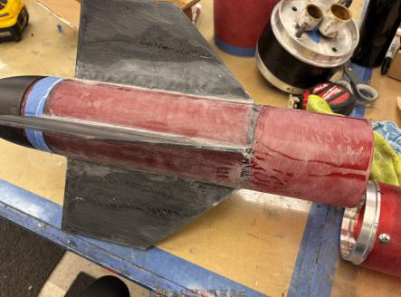
Payload test setup with instrumentation and safety constraints.
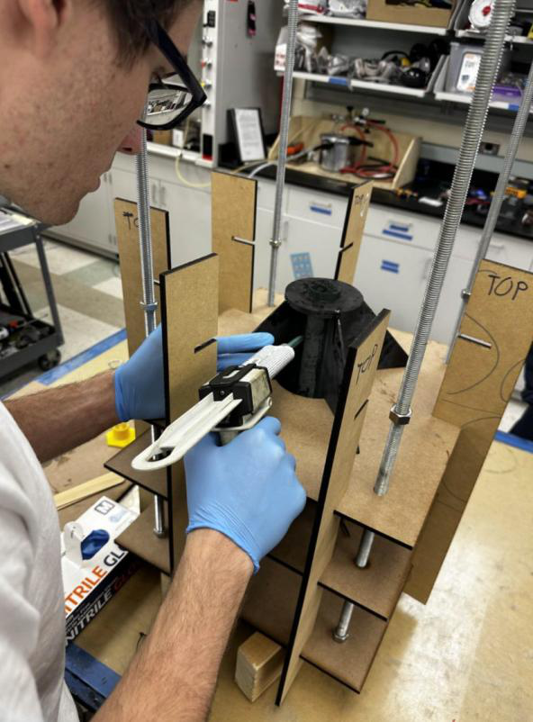
In-progress payload test showing dynamic behavior.
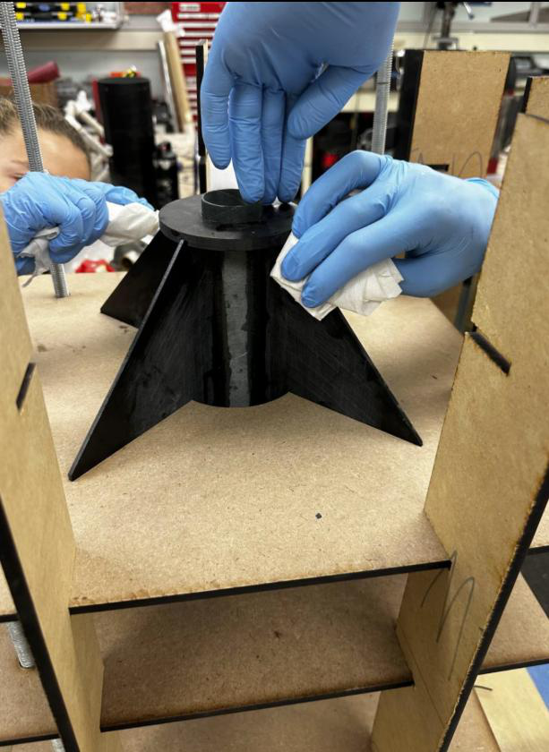
Post-test inspection of payload hardware after drop/deployment tests.